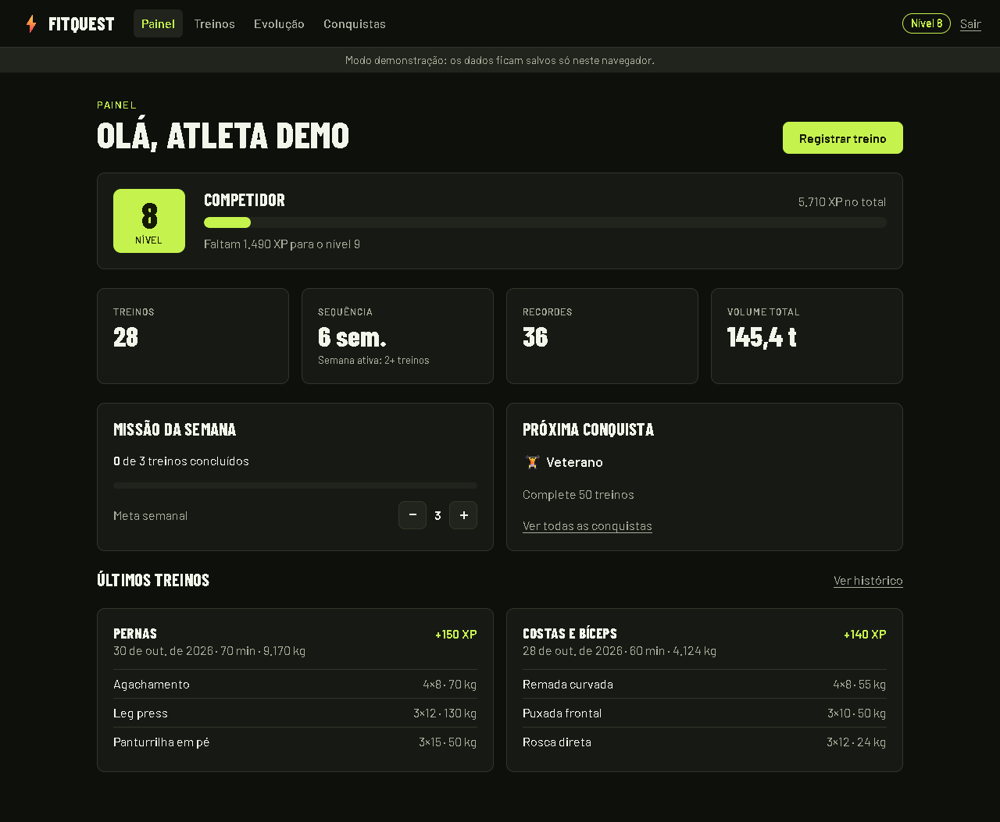
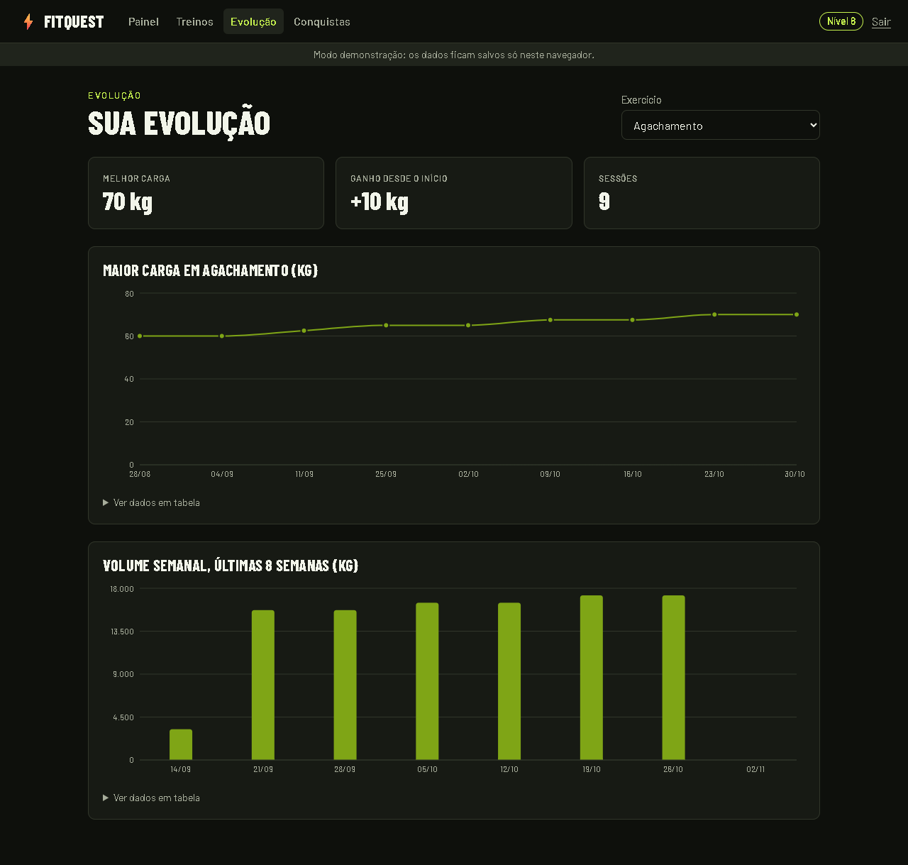
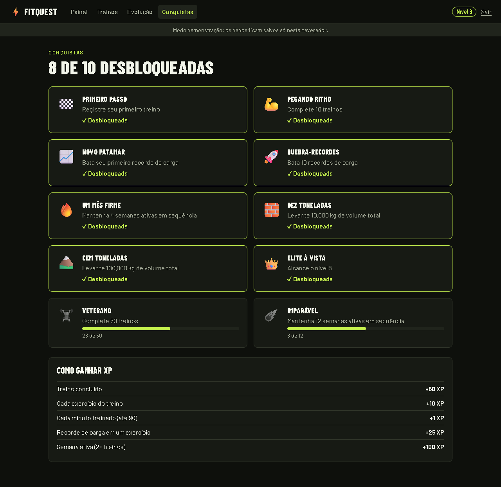
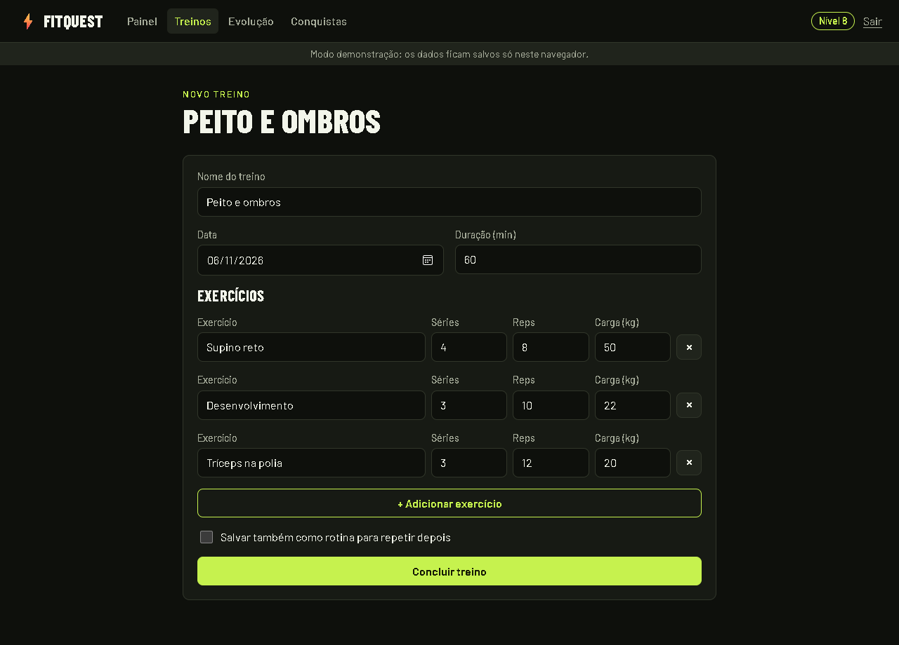

Proposta do Trabalho Final · Front-end Frameworks
Aplicação web de gestão de treinos, acompanhamento da evolução e gamificação, desenvolvida em React.js com TypeScript.
O FitQuest é uma aplicação web para quem treina na academia registrar seus treinos, acompanhar a própria evolução e se manter motivado por meio de um sistema de gamificação. Cada treino concluído rende pontos de experiência (XP), que fazem o usuário subir de nível, manter sequências semanais e desbloquear conquistas.
O tema foi escolhido pelo grupo por unir um problema comum do dia a dia a todos os requisitos técnicos da disciplina: componentização, hooks, roteamento entre páginas e integração com dados reais.
Muitas pessoas começam a treinar e desistem nas primeiras semanas. Dois motivos aparecem com frequência:
O FitQuest ataca os dois pontos ao mesmo tempo. O registro organizado transforma o progresso em números e gráficos, e a gamificação oferece uma recompensa visível a cada sessão, incentivando a constância.
Desenvolver uma aplicação web em React.js com TypeScript que permita gerenciar treinos, acompanhar a evolução e estimular a constância por meio de gamificação, aplicando componentização, hooks, roteamento e integração com dados.
Estudantes e frequentadores de academia, iniciantes ou intermediários, que querem acompanhar o próprio treino de forma simples, sem planilhas, e precisam de um incentivo extra para manter a regularidade.
Registro de treinos, rotinas reutilizáveis, histórico com busca e exclusão de registros.
Gráfico da maior carga por exercício, volume semanal das últimas 8 semanas e estatísticas gerais.
XP por treino, níveis com títulos, sequência semanal, recordes de carga, missão da semana e conquistas.
| Página | Rota | O que oferece |
|---|---|---|
| Início | / | Apresentação do app e acesso ao cadastro |
| Login | /login | Entrar ou criar conta com e-mail e senha |
| Painel | /painel | Nível, XP, estatísticas, missão da semana, próxima conquista e últimos treinos |
| Treinos | /treinos | Rotinas salvas e histórico de treinos com busca |
| Novo treino | /treinos/novo | Formulário de registro, que pode ser preenchido a partir de uma rotina |
| Evolução | /evolucao | Gráficos de carga por exercício e de volume semanal |
| Conquistas | /conquistas | Conquistas desbloqueadas, progresso das demais e regras de XP |
As páginas internas só podem ser acessadas por usuários logados. Há também uma página de erro para endereços inexistentes.
O progresso é sempre recalculado a partir da lista de treinos do usuário. Assim, se um treino for excluído, XP, nível e conquistas se ajustam automaticamente, sem risco de inconsistência.
| Ação | XP |
|---|---|
| Treino concluído | +50 |
| Cada exercício do treino | +10 |
| Cada minuto treinado, até 90 minutos | +1 |
| Recorde de carga em um exercício | +25 |
| Semana ativa, com 2 ou mais treinos | +100 |
100 × nível × (nível − 1), ou seja, 200 XP para o nível 2, 600 para o 3 e 1.200 para o 4. Cada faixa de níveis tem um título, de Iniciante a Lenda.| Tecnologia | Uso no projeto |
|---|---|
| React.js + TypeScript | Interface em componentes funcionais com tipagem em todo o código |
| Vite | Ambiente de desenvolvimento e geração da versão de produção |
| React Router | Navegação entre as páginas e proteção das rotas internas |
| Firebase Authentication | Cadastro e login com e-mail e senha |
| Cloud Firestore | Armazenamento em nuvem dos treinos e rotinas de cada usuário |
| Recharts | Gráficos de evolução de carga e volume semanal |
O código é organizado em camadas: componentes e páginas cuidam da interface; contextos guardam o estado global de autenticação e treinos; hooks personalizados expõem esses dados às telas; e a camada de serviços concentra o acesso ao Firebase. As regras de gamificação ficam isoladas em funções puras, o que facilita explicá-las e testá-las.
Os dados ficam em users/{id}/workouts e users/{id}/routines, e as regras de segurança do Firestore garantem que cada usuário só acesse os próprios registros. O projeto também tem um modo demonstração com dados locais, usado quando o Firebase não está configurado, o que permite rodar o app em qualquer máquina.
| Requisito do trabalho | Exigido | No FitQuest |
|---|---|---|
| Componentes funcionais | Mínimo de 8, 2 por integrante | 10 componentes, 2 por integrante |
| Navegação e páginas | Mínimo de 5 páginas | 7 páginas, mais a página de erro |
| Hooks | Mínimo de 4 diferentes | 10 hooks: useState, useEffect, useContext, useRef, useMemo, useCallback e 4 hooks próprios |
| Linguagem | TypeScript | Todo o código em .ts e .tsx |
| Backend ou API (opcional) | Até +1,0 ponto | Firebase para autenticação e banco de dados |
useAuth: fornece o usuário logado a qualquer tela.useTraining: lê e altera treinos e rotinas.useGamification: calcula XP, nível, sequência e conquistas.useLocalStorage: guarda a meta semanal no navegador.Cada integrante é responsável por desenvolver e explicar 2 componentes na apresentação.
| Integrante | Componentes | Responsabilidade |
|---|---|---|
| Thiago Victor | NavbarProtectedRoute | Navegação principal e bloqueio das rotas para quem não está logado |
| Eduardo Martins | WorkoutFormExerciseRow | Formulário de registro de treino e linha de cada exercício |
| Esdras Elohim | WorkoutCardRoutineCard | Exibição dos treinos do histórico e das rotinas salvas |
| Ruan Bandeira | ProgressChartStatCard | Gráficos de evolução e cartões de estatística |
| Sara | XPBarAchievementBadge | Barra de nível e XP e cartões de conquista |
Capturas da versão atual, no modo demonstração com dados de exemplo.




| Data | Atividade |
|---|---|
| Até 10/11 | Criar o projeto no Firebase, configurar o app e testar login e armazenamento |
| 11/11 a 12/11 | Cada integrante revisa seus 2 componentes e prepara a explicação do código |
| 13/11 | Publicar o repositório no GitHub e fazer o deploy na Vercel |
| 14/11 | Completar o README com integrantes, instruções e telas finais |
| 15/11 a 16/11 | Ensaiar a apresentação de 15 minutos com todos os integrantes |
| 17/11 | Ajustes finais e, se necessário, gravação da apresentação |
| 18/11 | Entrega no Teams: link do GitHub e, se gravada, link do vídeo |
Roteiro previsto para a demonstração: cadastro de um usuário, registro de um treino a partir de uma rotina, recompensa em XP e conquista, gráficos de evolução e, por fim, explicação do código por cada integrante.